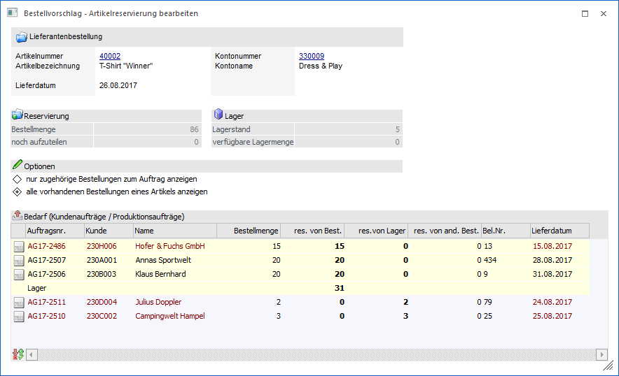
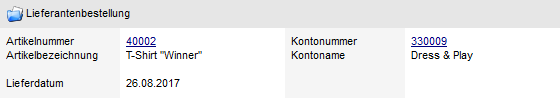
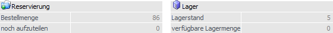
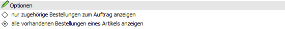
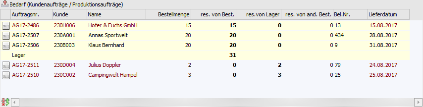
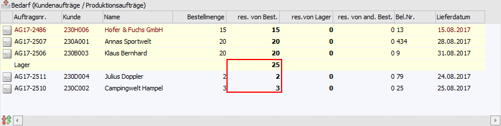
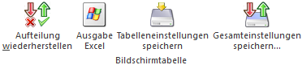
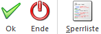

Wird die Menge eines Artikels mit Reservierungskennzeichen (WinLine FAKT - Stammdaten - Artikelstamm - Artikel - Register "Lager" - Unterregister "Einstellungen" - Feld "Produktion / Bestellung") in dem Fenster Bestellvorschlag bearbeiten editiert, so öffnet sich automatisch das Fenster "Bestellvorschlag - Artikelreservierungen bearbeiten". Innerhalb des Fensters kann definiert werden, auf welche Bedarfszeilen von Bedarfserzeugern (Kunden-, Produktions- bzw. Fertigungsaufträge) oder dem Lager sich die Mengenänderung auswirkt.
Hinweis
Das Fenster kann auch manuell geöffnet werden. Dieses ist durch Anwahl des Taste F8 zu realisieren, wobei der Fokus auf der Artikelnummer liegen muss.

Folgende Informationen und Einstellungen stehen zur Verfügung:
Info

In diesem Bereich wird Auskunft über den aktuellen Artikel, das geplante Lieferdatum (gemäß Bestellvorschlag) und den Lieferanten gegeben.
Zuteilung

Ø Bestellmenge
An dieser Stelle wird die Bestellmenge gemäß Bestellvorschlag angezeigt.
Ø noch aufzuteilen
Hier wird die Menge angezeigt, welche von der Bestellmenge noch nicht auf die Bedarfszeilen (Kunden-, Produktions- bzw. Fertigungsaufträge) oder auf das Lager aufgeteilt wurde.
Ø Lagerstand
An dieser Stelle wird der aktuelle Lagerstand des Artikels angezeigt.
Ø verfügbare Menge
Hier wird die Menge angezeigt, welche noch vom Lager verfügbar ist, d.h. den Bedarfszeilen von Bedarfserzeugern (Kunden-, Produktions- bzw. Fertigungsaufträge) zugeordnet werden könnte.
Optionen

In diesem Bereich wird definiert, welche Bedarfszeilen von Bedarfserzeugern (Kunden-, Produktions- bzw. Fertigungsaufträge) in der Tabelle "Bedarf" angezeigt werden sollen.
Ø nur zugehörige Aufträge zur Lieferantenbestellung anzeigen
Bei Aktivierung dieses Radiobuttons werden nur jene Kunden-, Produktions- bzw. Fertigungsaufträge angezeigt, für welche bereits eine Reservierung von der Bestellmenge durchgeführt wurde. Zusätzlich wird das Lager dargestellt.
Ø alle vorhandenen Aufträge eines Artikels anzeigen
Bei Aktivierung dieses Radiobuttons werden alle vorhanden Kunden-, Produktions- bzw. Fertigungsaufträge des Artikels angezeigt, d.h. auch jene, für welche keine Reservierung vorgenommen wurde. Zusätzlich wird das Lager dargestellt.
Tabelle "Bedarf"

Innerhalb der Tabelle "Bedarf" werden die Bedarfszeilen der Bedarfserzeuger (Kunden-, Produktions- bzw. Fertigungsaufträge) und das Lager dargestellt. Die Sortierung wird wie folgt vorgenommen:
ü Kunden-, Produktions- bzw. Fertigungsaufträge für welche bereits eine Reservierung von der Bestellmenge vorliegt (aufsteigend nach Lieferdatum / Produktionsdatum)
ü Lager
ü Kunden-, Produktions- bzw. Fertigungsaufträge für welche es bisher keine Reservierung von der Bestellmenge vorliegt (aufsteigend nach Lieferdatum / Produktionsdatum)
Wird z.B. eine höhere Menge bestellt, als jene, welche automatisch reserviert wurde, so kann die überschüssige Menge auf die übrigen Bedarfszeilen oder dem Lager aufgeteilt werden (siehe Spalte "res. von Best.").
Hinweis
Handelt es sich um eine Bedarfszeile, welcher nicht rechtzeitig von der Lieferantenbestellung versorgt werden kann, so wird die Schrift der Zeile in Rot dargestellt.
Ø Bedarfserzeuger
An dieser Stelle wird durch ein Symbol dargestellt ob es sich bei der Bedarfszeile um einen Kundenauftrag oder einen Produktionsauftrag handelt.
ü - Kunden- bzw. Fertigungsauftrag
ü - Produktionsauftrag
Ø Auftragsnr.
In dieser Spalte wird die Nummer des Kunden-, Produktions- bzw. Fertigungsauftrags angezeigt.
Ø Kunde / Name
In diesen Spalten wird die Kundennummer samt Name des Kunden-, Produktions- bzw. Fertigungsauftrags angezeigt.
Ø Bestellmenge
An dieser Stelle wird die noch offene Bestellmenge des Kunden-, Produktions- bzw. Fertigungsauftrags angezeigt.
Ø res. von Best. (reserviert von Bestellung)
Hier wird die Menge eingegeben, die von dem Beleg (Lieferantenbestellung, Produktionsauftrag oder Fertigungsauftrag), welcher aktuell erzeugt wird, für die Bedarfszeile reserviert werden soll.
Beispiel
Es werden 85 Stück zum 23.08.2017 bestellt. Für die ersten Aufträge wurden bereits 55 Stück reserviert. Die restlichen 30 Stück würden auf Lager gebucht werden. Nach Aktivierung der Checkbox "alle vorhandenen Aufträge eines Artikels anzeigen" wird ersichtlich, dass noch weiterer Aufträge über insgesamt 5 Stück des Artikels vorhanden sind. Die Mengen können nun so editiert werden, dass von den übrigen 30 Stück 5 Stück für die Aufträge reserviert werden und nur 25 Stück aufs Lager gebucht werden.

Ø res. von Lager (reserviert von Lager)
An dieser Stelle wird die Menge eingegeben, welche vom Lager für die Bedarfszeile reserviert werden soll.
Ø res. von and. Best. (reserviert von anderen Bestellungen)
In dieser Spalte wird die Menge angezeigt, die von einer anderen bereits bestehenden Lieferantenbestellung / Produktionsauftrag / Fertigungsauftrag, für diese Bedarfszeile reserviert worden ist.
Ø Bel.Nr.
Handelt es sich um eine Bedarfszeile eines Kundenauftrags oder einer Fertigung, so wird in dieser Spalte die Laufnummer des Belegs angezeigt.
Ø Lieferdatum
An dieser Stelle wird das Lieferdatum des Kunden-, Produktions- bzw. Fertigungsauftrags angezeigt. Sollte das Datum kleiner dem Lieferdatum des entstehenden Belegs (Lieferantenbestellung, Produktionsauftrag oder Fertigungsauftrag) sein, so wird die Schrift der Zeile in Rot dargestellt.
Tabellenbuttons

Ø Aufteilung wiederhestellen
Durch Anwahl dieses Buttons werden die getätigten und noch nicht gespeicherten Änderungen der Reservierung verworfen und der Ursprungszustand wiederhergestellt.
Ø Ausgabe Excel
Durch Anwahl des Buttons "Ausgabe Excel" wird der Inhalt der Tabelle nach Microsoft Excel übergeben.
Ø Tabelleneinstellungen speichern
Die Spalten einer Tabelle können grundsätzlich an beliebige Positionen verschoben, bzw. in der Breite entsprechend angepasst werden. Durch Anwahl des Buttons "Tabelleneinstellungen speichern" werden die Einstellungen benutzerspezifisch gespeichert und bei dem nächsten Aufruf des Programmpunktes wieder vorgeschlagen.
Ø Gesamteinstellungen speichern
Im Gegensatz zu "Tabelleneinstellungen speichern" können mit "Gesamteinstellungen speichern" mehrere Tabellenaufbauten gespeichert und nach Wunsch geladen werden. Zusätzlich werden Sonderfunktionen der Tabelle (z.B. "Spalte gruppieren") ebenfalls bei der Speicherung bedacht.
Buttons

Ø Ok
Durch Anwahl des Buttons "Ok" bzw. der Taste F5 werden die vorgenommenen Änderungen gespeichert.
Ø Ende
Bei Anwahl des Buttons "Ende" bzw. der Taste ESC werden die noch gespeicherten Eingaben verworfen und das Fenster geschlossen.
Ø Sperrliste
Mit Hilfe des Buttons "Sperrliste" wird eine Reservierungsliste für den aktuellen Artikel ausgegeben. Auf dieser werden wiederum alle Bedarfszeilen von Bedarfserzeugern aufgeführt, bei denen es einen Konflikt gibt.